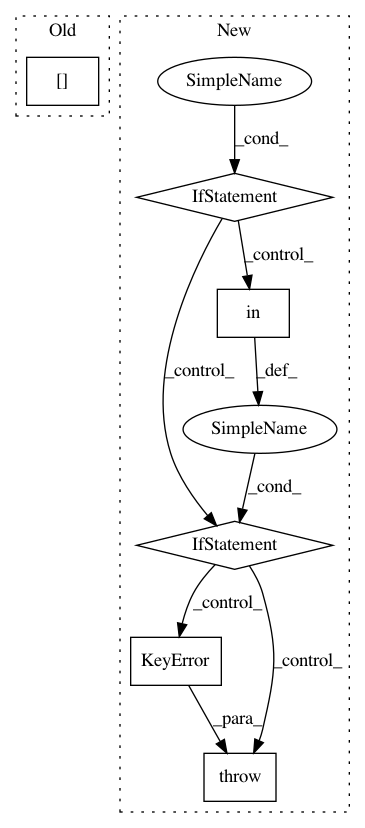

2409ca833031ab770e68a334cf2686d1d8d930d1,jiant/proj/main/modeling/taskmodels.py,,get_output_from_encoder,#Any#Any#Any#Any#,288
Before Change
output = encoder(input_ids=input_ids, token_type_ids=segment_ids, attention_mask=input_mask)
if len(output) == 2:
return EncoderOutput(pooled=output[1], unpooled=output[0],)
elif len(output) > 2:
// Extend later with attention, hidden_acts, etc
return EncoderOutput(pooled=output[1], unpooled=output[0], other=output[2:])
After Change
model_arch = ModelArchitectures.from_encoder(encoder)
if model_arch in [
ModelArchitectures.BERT,
ModelArchitectures.ROBERTA,
ModelArchitectures.ALBERT,
ModelArchitectures.XLM_ROBERTA,
]:
pooled, unpooled, other = get_output_from_standard_transformer_models(
encoder=encoder, input_ids=input_ids, segment_ids=segment_ids, input_mask=input_mask,
)
elif model_arch == ModelArchitectures.ELECTRA:
pooled, unpooled, other = get_output_from_electra(
encoder=encoder, input_ids=input_ids, segment_ids=segment_ids, input_mask=input_mask,
)
elif model_arch in [
ModelArchitectures.BART,
ModelArchitectures.MBART,
]:
pooled, unpooled, other = get_output_from_bart_models(
encoder=encoder, input_ids=input_ids, input_mask=input_mask,
)
else:
raise KeyError(model_arch)
// Extend later with attention, hidden_acts, etc
if other:
return EncoderOutput(pooled=pooled, unpooled=unpooled, other=other)
else:
return EncoderOutput(pooled=pooled, unpooled=unpooled)
In pattern: SUPERPATTERN
Frequency: 3
Non-data size: 6
Instances
Project Name: jsalt18-sentence-repl/jiant
Commit Name: 2409ca833031ab770e68a334cf2686d1d8d930d1
Time: 2020-09-23
Author: email@jasonphang.com
File Name: jiant/proj/main/modeling/taskmodels.py
Class Name:
Method Name: get_output_from_encoder
Project Name: stanford-mast/nn_dataflow
Commit Name: 4fb88fdc63292d93ce2fdbbf77a4043f18b2c769
Time: 2017-05-03
Author: mgao12@stanford.edu
File Name: nn_dataflow/Network.py
Class Name: Network
Method Name: add
Project Name: MolSSI/QCEngine
Commit Name: 0d5a1c1b9d395b50ec7edc67d0f52959c3848c85
Time: 2019-11-29
Author: mattgwelborn@gmail.com
File Name: qcengine/programs/entos.py
Class Name: EntosHarness
Method Name: parse_output